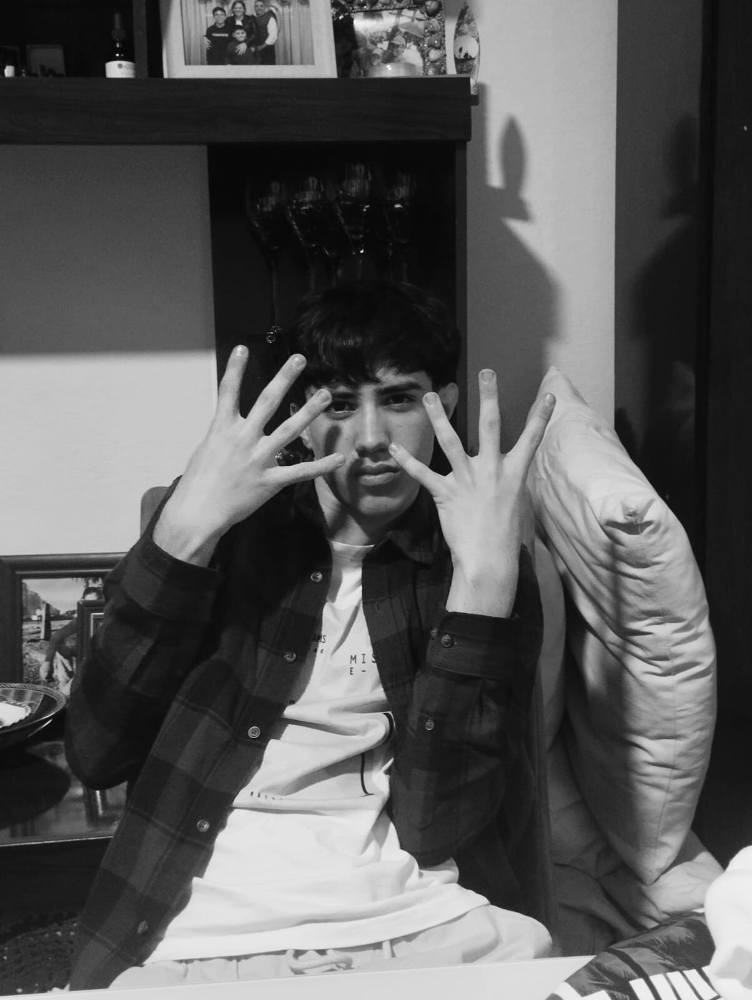
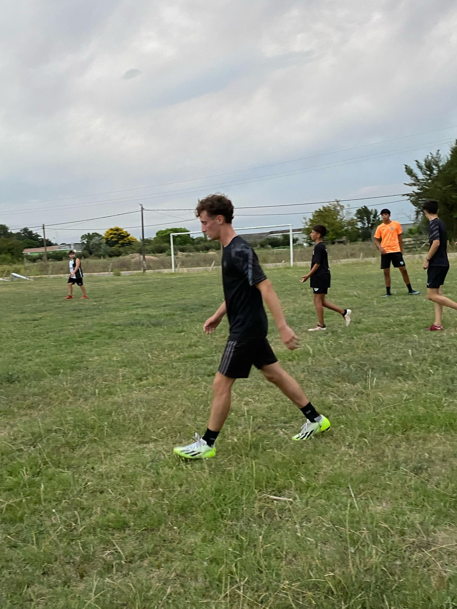

Agustín
Agustín es un chico de 16 años. Él destaca por buscar nuevos objetivos y romances.
- Fiel
- Alto
- Moreno
- Chamuyero
- Copado
Fabián
Fabián es un chico de 17 años. Él destaca por ser un hombre pese a su edad.
- Tímido
- Motoquero
- Altura promedio
- Carismático
- Apasionado
Federico
Federico es un chico de 16 años. Él destaca por ser un avanzado socialmente.
- Casado
- Galguero
- Padres de plata
- Muy leal
- Impulsivo

Gonzalo
Gonzalo es un chico de 16 años. Él destaca por ser un adicto a las mujeres.
- Gracioso
- Morocho
- Le gustan menores
- Muy sociable
- Carbonero

Mateo
Mateo es un chico de 17 años yendo a 18. Él destaca por ser el más "maduro" del grupo.
- De novio
- Musculoso
- Fan de CR7
- Inocente
- Enamoradizo
Nacho
Nacho es un chico de 15 años. Él destaca por ser el más joven del grupo.
- Gamer
- Pollera
- Genética buena
- Calentón
- Impaciente

Facundo
Facundo es un chico de 16 años. Él destaca por ser el más apartado del grupo.
- Callado
- Futbolista
- Peludo
- Gorra característica
- Amante del asado